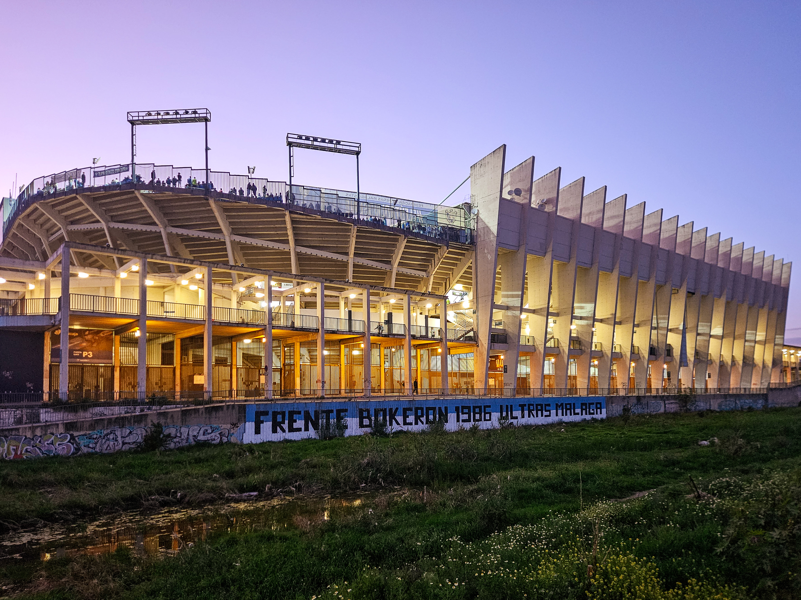

💙🤍 EL TEMPLO DEL MALAGUISMO 🤍💙
La Rosaleda es el estadio donde juega sus partidos el Málaga CF.
Aquí los malaguistas se reúnen para animar al equipo, cantar y vivir cada partido con pasión.
💙🤍 ¡Un lugar lleno de sentimiento blanquiazul! 🤍💙
Málaga
Andalucía
Málaga CF
Los malaguistas
Cuando llega el día de partido, La Rosaleda se transforma.
💙 Banderas
🤍 Camisetas blanquiazules
🗣️ Cánticos
⚽ Fútbol
🔥 Pasión
Todo se une para animar al Málaga CF.
🐟 La Rosaleda siempre será territorio malaguista.